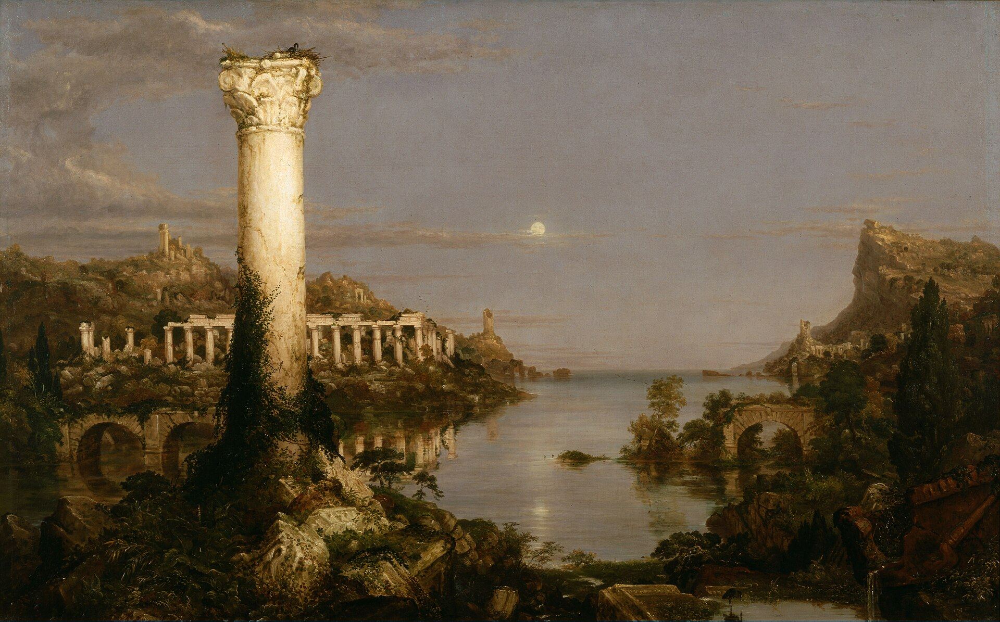
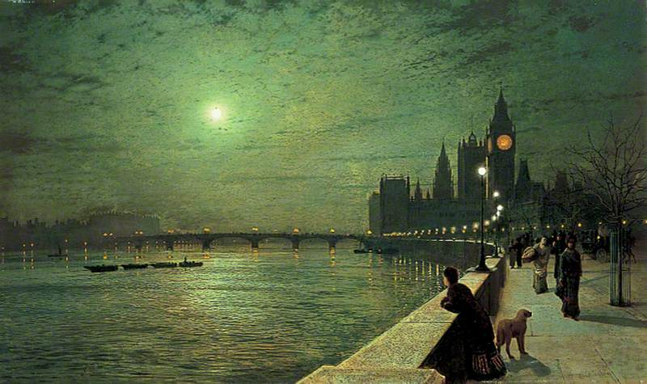
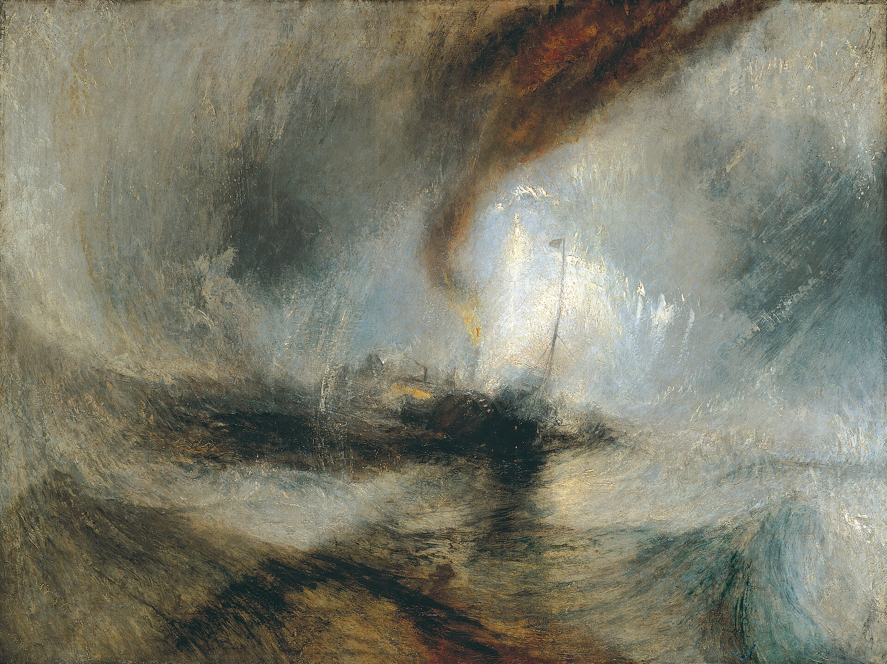
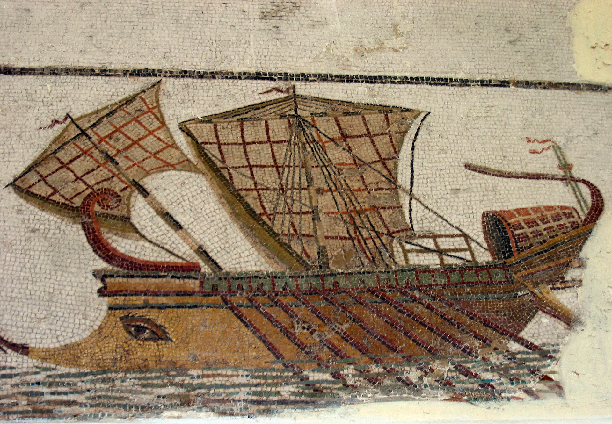
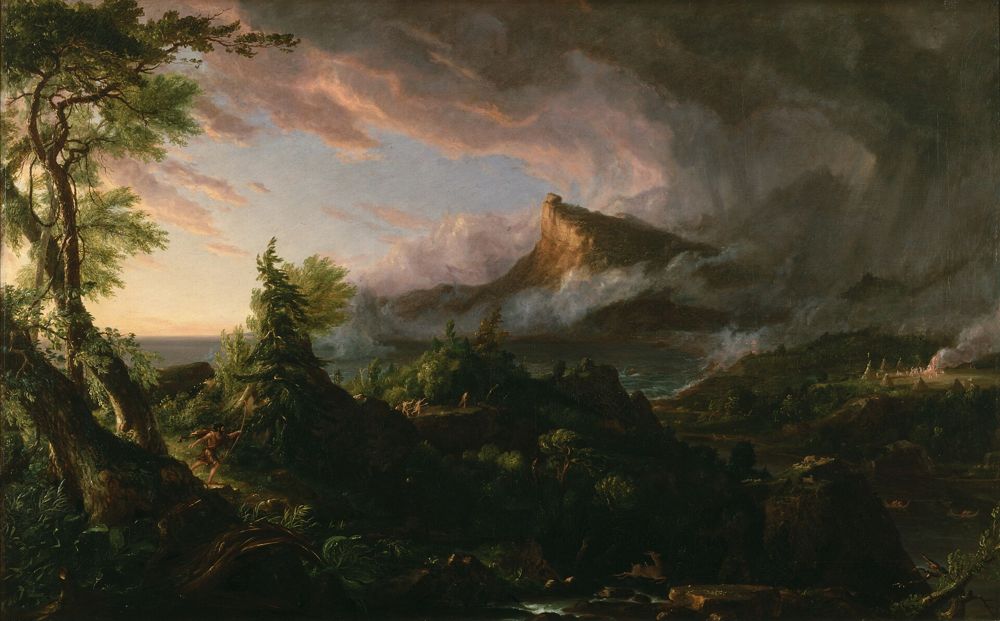
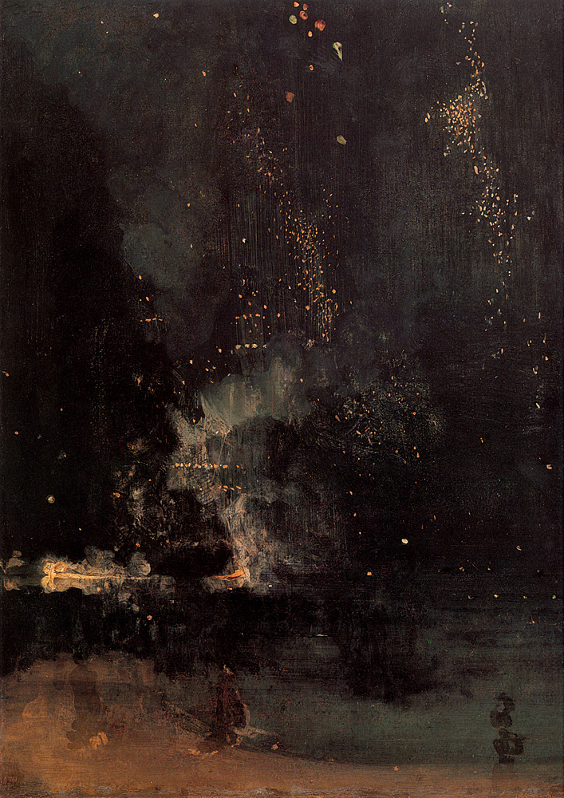

← 目次He was the only man of us who still “followed the sea.” The worst that could be said of him was that he did not represent his class. He was a seaman, but he was a wanderer, too, while most seamen lead, if one may so express it, a sedentary life. Their minds are of the stay-at-home order, and their home is always with them—the ship; and so is their country—the sea. One ship is very much like another, and the sea is always the same. In the immutability of their surroundings the foreign shores, the foreign faces, the changing immensity of life, glide past, veiled not by a sense of mystery but by a slightly disdainful ignorance; for there is nothing mysterious to a seaman unless it be the sea itself, which is the mistress of his existence and as inscrutable as Destiny. For the rest, after his hours of work, a casual stroll or a casual spree on shore suffices to unfold for him the secret of a whole continent, and generally he finds the secret not worth knowing. The yarns of seamen have a direct simplicity, the whole meaning of which lies within the shell of a cracked nut. But Marlow was not typical (if his propensity to spin yarns be excepted), and to him the meaning of an episode was not inside like a kernel but outside, enveloping the tale which brought it out only as a glow brings out a haze, in the likeness of one of these misty halos that sometimes are made visible by the spectral illumination of moonshine.

To him the meaning of an episode was not inside like a kernel but outside, enveloping the tale.
J. A. Grimshaw, Reflections on the Thames, Westminster, 1880／Public domain／Commons
His remark did not seem at all surprising. It was just like Marlow. It was accepted in silence. No one took the trouble to grunt even; and presently he said, very slow—“I was thinking of very old times, when the Romans first came here, nineteen hundred years ago—the other day .... Light came out of this river since—you say Knights? Yes; but it is like a running blaze on a plain, like a flash of lightning in the clouds. We live in the flicker—may it last as long as the old earth keeps rolling! But darkness was here yesterday.

J. M. W. Turner, Snow Storm – Steam-Boat off a Harbour’s Mouth, 1842／Public domain／Commons
Imagine the feelings of a commander of a fine—what d’ye call ’em?—trireme in the Mediterranean, ordered suddenly to the north; run overland across the Gauls in a hurry; put in charge of one of these craft the legionaries—a wonderful lot of handy men they must have been, too—used to build, apparently by the hundred, in a month or two, if we may believe what we read. Imagine him here—the very end of the world, a sea the colour of lead, a sky the colour of smoke, a kind of ship about as rigid as a concertina—and going up this river with stores, or orders, or what you like. Sand-banks, marshes, forests, savages,—precious little to eat fit for a civilized man, nothing but Thames water to drink. No Falernian wine here, no going ashore. Here and there a military camp lost in a wilderness, like a needle in a bundle of hay—cold, fog, tempests, disease, exile, and death—death skulking in the air, in the water, in the bush.

ローマ時代のモザイク（チュニジア）, Roman ship／写真 Mathiasrex／CC BY 2.5／Commons
They must have been dying like flies here. Oh, yes—he did it. Did it very well, too, no doubt, and without thinking much about it either, except afterwards to brag of what he had gone through in his time, perhaps. They were men enough to face the darkness.
And perhaps he was cheered by keeping his eye on a chance of promotion to the fleet at Ravenna by and by, if he had good friends in Rome and survived the awful climate. Or think of a decent young citizen in a toga—perhaps too much dice, you know—coming out here in the train of some prefect, or tax-gatherer, or trader even, to mend his fortunes. Land in a swamp, march through the woods, and in some inland post feel the savagery, the utter savagery, had closed round him—all that mysterious life of the wilderness that stirs in the forest, in the jungles, in the hearts of wild men. There’s no initiation either into such mysteries. He has to live in the midst of the incomprehensible, which is also detestable. And it has a fascination, too, that goes to work upon him. The fascination of the abomination—you know, imagine the growing regrets, the longing to escape, the powerless disgust, the surrender, the hate.”

Thomas Cole, The Course of Empire: The Savage State, 1834／Public domain／Commons
“Mind,” he began again, lifting one arm from the elbow, the palm of the hand outwards, so that, with his legs folded before him, he had the pose of a Buddha preaching in European clothes and without a lotus-flower—“Mind, none of us would feel exactly like this. What saves us is efficiency—the devotion to efficiency. But these chaps were not much account, really. They were no colonists; their administration was merely a squeeze, and nothing more, I suspect. They were conquerors, and for that you want only brute force—nothing to boast of, when you have it, since your strength is just an accident arising from the weakness of others. They grabbed what they could get for the sake of what was to be got. It was just robbery with violence, aggravated murder on a great scale, and men going at it blind—as is very proper for those who tackle a darkness. The conquest of the earth, which mostly means the taking it away from those who have a different complexion or slightly flatter noses than ourselves, is not a pretty thing when you look into it too much. What redeems it is the idea only. An idea at the back of it; not a sentimental pretence but an idea; and an unselfish belief in the idea—something you can set up, and bow down before, and offer a sacrifice to....”
The conquest of the earth, which mostly means the taking it away from those who have a different complexion or slightly flatter noses than ourselves, is not a pretty thing when you look into it too much. What redeems it is the idea only.

J. M. Whistler, Nocturne in Black and Gold: The Falling Rocket, 1875／Public domain／Commons
He broke off. Flames glided in the river, small green flames, red flames, white flames, pursuing, overtaking, joining, crossing each other—then separating slowly or hastily. The traffic of the great city went on in the deepening night upon the sleepless river. We looked on, waiting patiently—there was nothing else to do till the end of the flood; but it was only after a long silence, when he said, in a hesitating voice, “I suppose you fellows remember I did once turn fresh-water sailor for a bit,” that we knew we were fated, before the ebb began to run, to hear about one of Marlow’s inconclusive experiences.
The traffic of the great city went on in the deepening night upon the sleepless river.